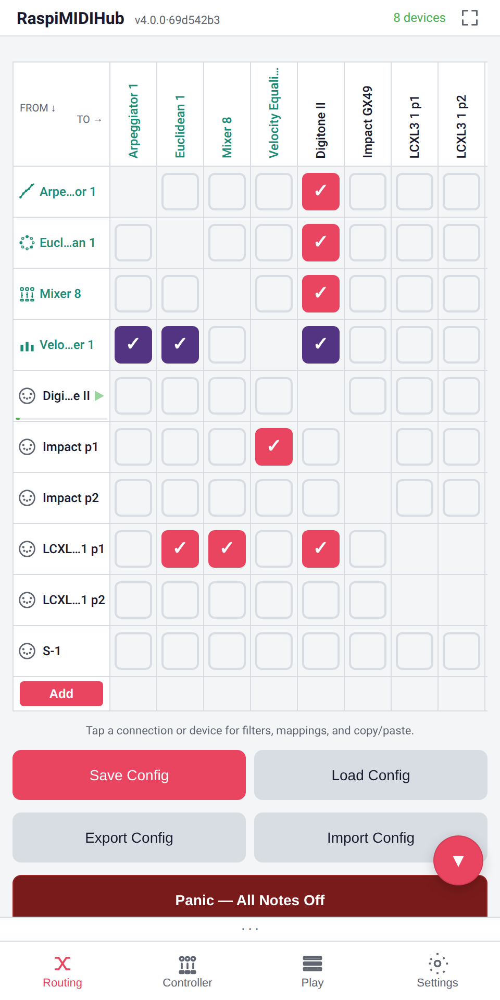
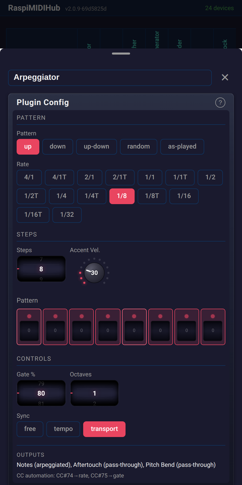
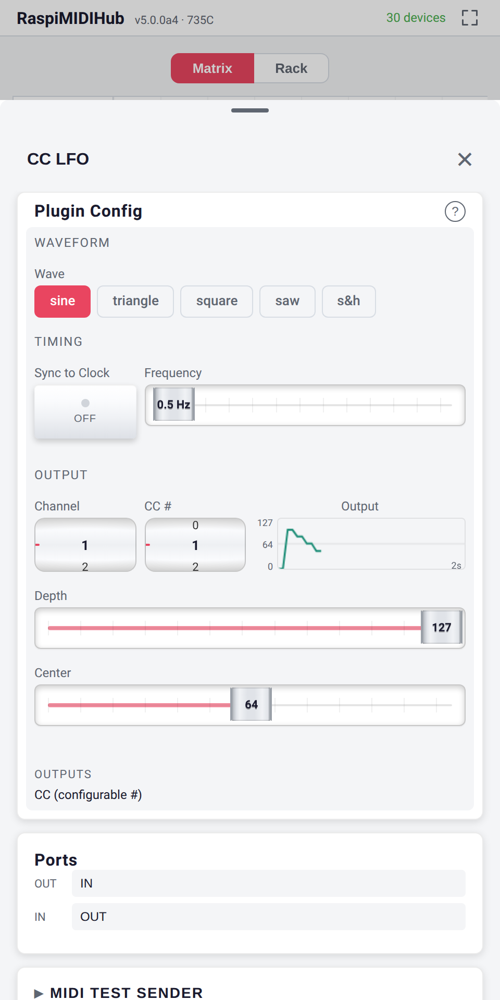
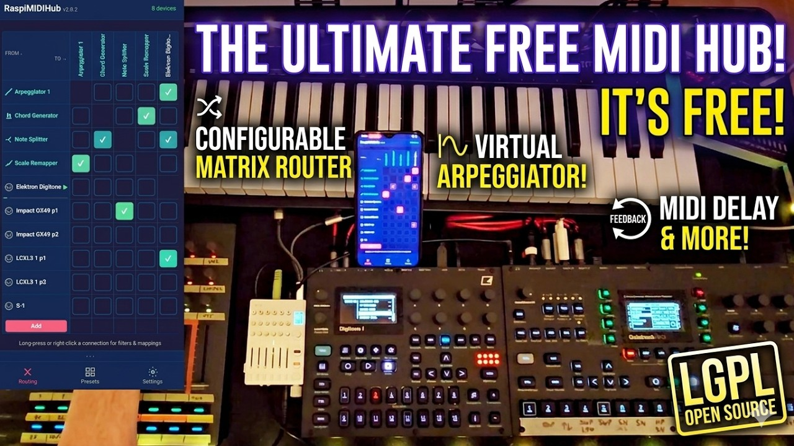
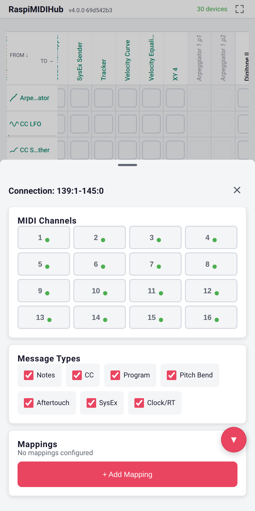
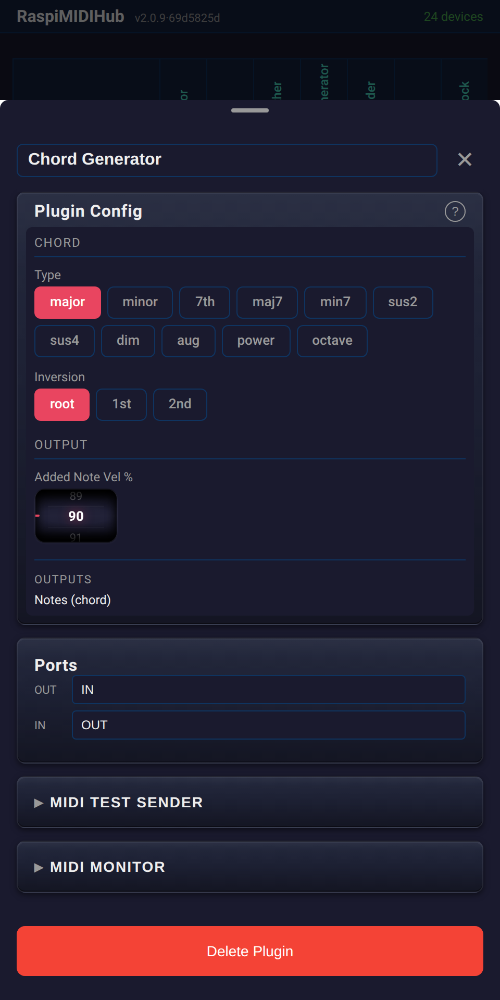
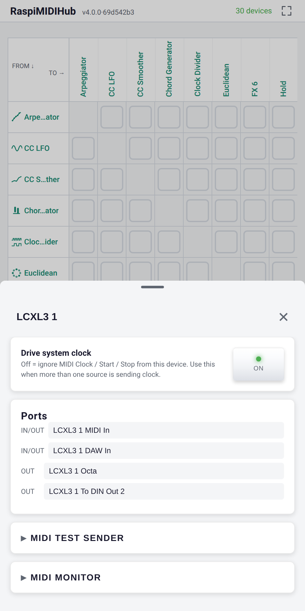

Turn your Raspberry Pi into a plug-and-play USB MIDI hub with virtual instruments. Control everything from your phone's browser.



Install on any Raspberry Pi with a single command. The Pi creates its own WiFi network automatically.
Connect USB MIDI devices -- keyboards, synths, drum machines, controllers. They're all routed to each other instantly.
Connect to the Pi's WiFi and open the browser. No app to install -- the full interface runs in any mobile browser.

See all your MIDI devices in a clean matrix. Tap to connect, long-press for per-connection filters and mappings. Live rate meters show MIDI activity. Add virtual instruments with one tap.
Filter MIDI messages on every connection individually. Block specific channels, message types, or set up complex CC-to-CC mappings with range scaling and inversion.

Virtual instruments and effects that appear as real MIDI devices in the routing matrix. Each plugin has its own custom interface with wheels, faders, toggles, step sequencers, and live scopes.

Every device gets a detail panel with a scrollable piano keyboard, CC slider, and live MIDI monitor. Test your setup without touching your gear.

Every plugin runs in its own thread, syncs to MIDI clock, and can be automated via hardware CCs.
Pattern player with step sequencer, accents, gate control, and transport sync. Creates polyrhythmic melodies.
Waveform generator with sine, triangle, square, saw, and sample-and-hold. Live oscilloscope output.
Play a single note, hear a full chord. 11 chord types with inversions and velocity scaling.
Internal BPM clock with start/stop transport. Drives all your synced gear from one place.
Note delay with feedback repeats and velocity decay. Circular buffer architecture for rock-solid timing.
Quantize notes to musical scales -- major, minor, pentatonic, blues, and more. Never hit a wrong note.
Remove jitter from noisy knobs with configurable smoothing. Dual scopes show before and after.
Draw a custom 128-point velocity response curve. Presets for soft, hard, exponential, S-curve.
Split your keyboard at any note into two MIDI channels with independent transpose per zone.
Shift all notes up or down by semitones. Simple, instant, automatable via CC.
Normalize velocity to a fixed value or compress the range. Tame those dynamics.
All Notes Off + All Sound Off on all 16 channels. The emergency stop you always need on stage.
RaspiMIDIHub was born from real live performance needs. Built by 2ndinterval -- a musician who performs live with synths and controllers.
Read-only filesystem means you can pull the power at any time. No SD card corruption, ever.
Creates its own access point. No venue WiFi needed. Works anywhere, even outdoors.
Full interface in any mobile browser. iOS, Android, desktop -- just connect and open the page.
Add or remove USB MIDI devices at any time. The hub adapts instantly.
Each plugin runs in its own thread with pipe-based wake-up for tight clock sync.
LGPL licensed. Inspect the code, write your own plugins, contribute back.
One-line install on any Raspberry Pi:
curl -sL https://github.com/wamdam/raspimidihub/releases/latest/download/install.sh | bash